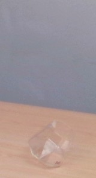
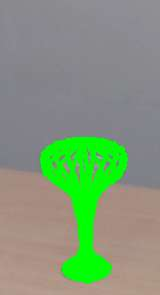

Multi-view shape estimation of transparent containers
The 3D localisation of an object and the estimation of its properties, such as shape and dimensions, are challenging under varying degrees of transparency and lighting conditions. In our paper, we propose LoDE (Localisation and Object Dimensions Estimator), a method for jointly localising container-like objects and estimating their dimensions using two wide-baseline, calibrated RGB cameras. Under the assumption of circular symmetry along the vertical axis, we estimate the dimensions of an object with a generative 3D sampling model of sparse circumferences, iterative shape fitting and image re-projection to verify the sampling hypotheses in each camera using semantic segmentation masks. We evaluate the proposed method on a novel dataset of objects with different degrees of transparency and captured under different backgrounds and illumination conditions. Our method, which is based on RGB images only, outperforms in terms of localisation success and dimension estimation accuracy a deep-learning based approach that uses depth maps.

Shape fitting samples
To estimate the shape of an object, we initialise around the 3D centroid, estimated from the two views, a cylindrical model that iteratively fits the object shape as observed by the cameras. The cylindrical model consists of a set of circumferences, each consisting of a set of sampled sparse 3D points. For each iteration, the radius of the circumferences is decreased and the points are resampled. If all the 3D points belonging to a circumference and projected in both views lie within the object mask of each view, then the radius of the circumference at that height is not longer decreased and reaches convergence (green points). Red are the projected points lying outside the segmentation masks. Blue are the projected points lying inside the segmentation mask but not at convergence yet.
Results
Shape fitting at convergence for each object in the CORSMAL Containers dataset. For the transparent objects 6 and 7, the underline deep learning-based segmentation method (Mask R-CNN) cannot detect the objects. Segmentation failures prevent LoDE to estimate the shape of the object.
|  |  | |||||||||||
Related material
Paper Pre-print (ArXiv)
If you use the code, please cite the publication:
Multi-view Shape Estimation of Transparent Containers
A. Xompero, R. Sanchez-Matilla, A. Modas, P. Frossard, and A. Cavallaro
IEEE International Conference on Acoustics, Speech and Signal Processing (ICASSP), Barcelona, Spain, 4-8 May 2020
Sponsors


Partners